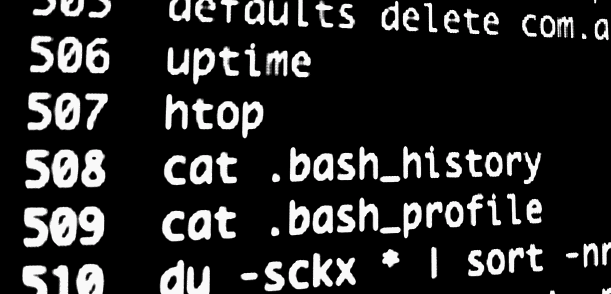

`Shellshock `__ is the latest Heartbleed level vulnerability to be discovered. It's a pretty long running exploit in how bash handles environment variables. It's a good thing to fix asap, especially if you're running any old services like telnet, ftp or an old version of apache.
Is my server vulnerable?
Run this.
env x='() { :;}; echo vulnerable' bash -c 'echo test'
If you see
vulnerable test
You should patch immediately.
However if you see.
test
You should be okay.
How to fix?
Centos/RedHat
yum update bash
Debian/Ubuntu
sudo apt-get update && sudo apt-get install bash
OSX
Unless your running OSX as a critical server somewhere remote, I'd hold off the solution for now and wait for Apple to distribute an update. If you need to update.
- Install homebrew
- Run
brew update
Then run
brew update bash
Backup your existing vulnerable bash
cp /usr/local/bin/bash /usr/local/bin/bash_old
Then symlink to the new brew installed bash
ln -s /usr/local/Cellar/bash/4.3.25/bin/bash /usr/local/bin/bash
Finally reboot!
Keep an eye on these solutions as time goes on as I fear these patches might not solve the whole problem.